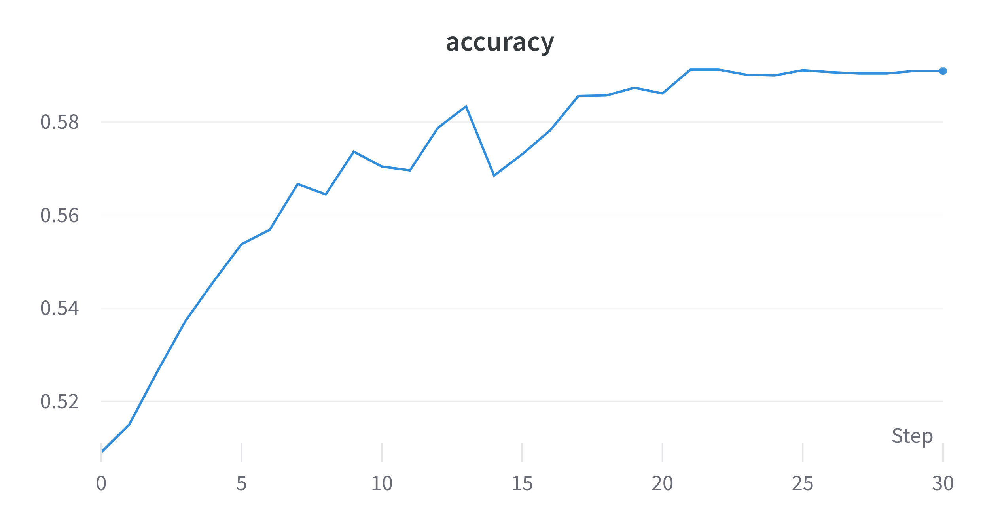
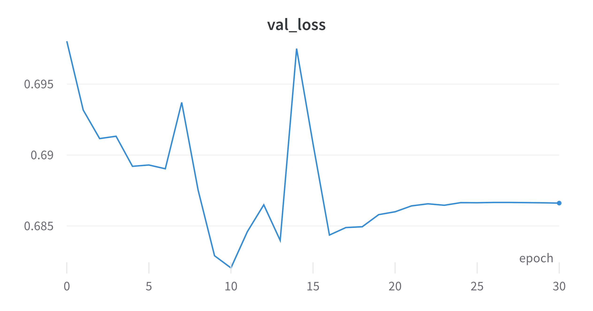
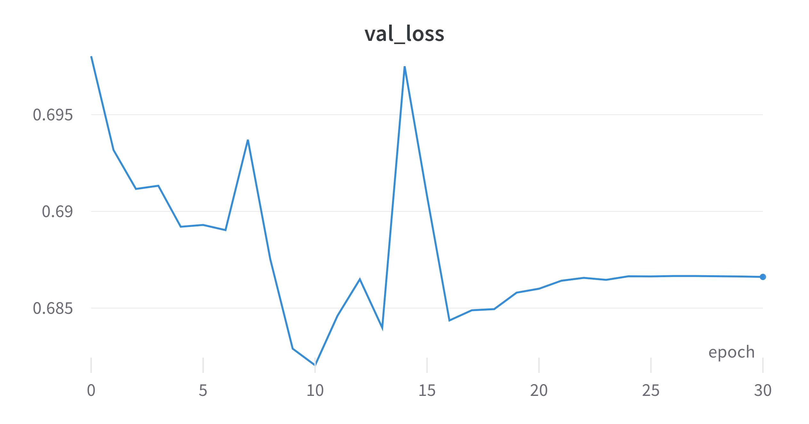
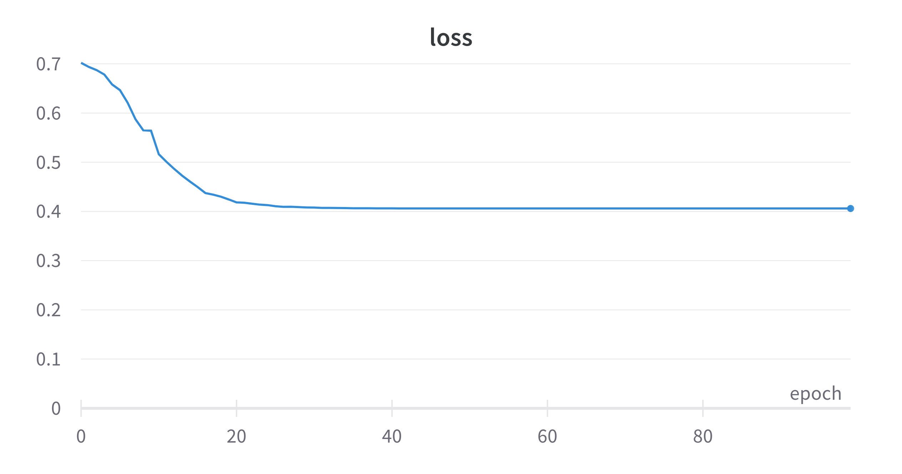
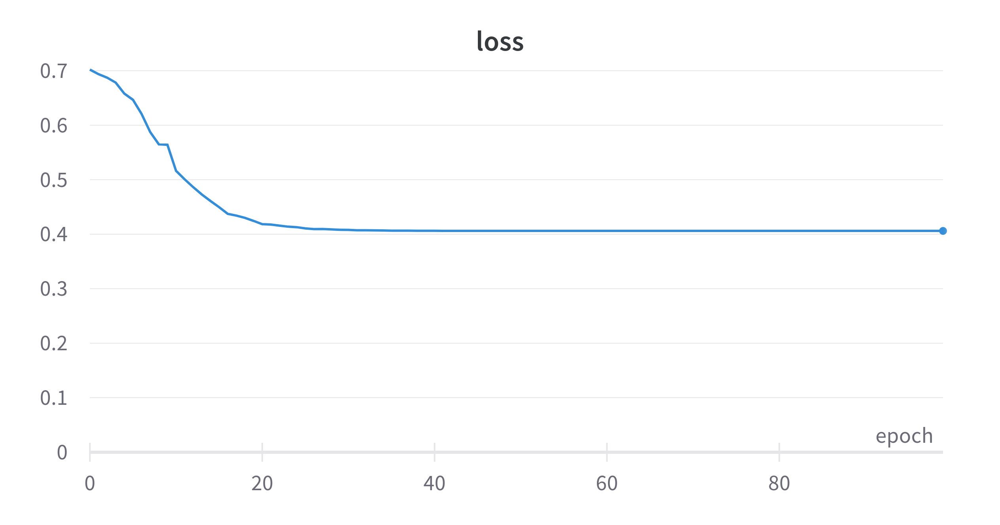
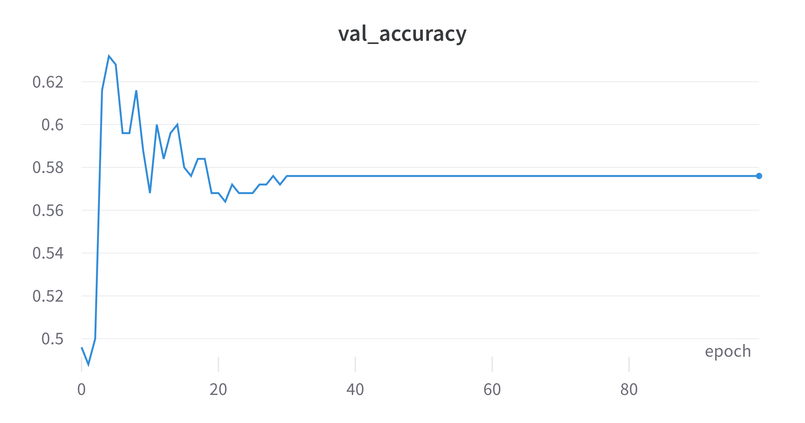

Overfitting’s Fault
revealOptions: transition: ‘fade’ transitionSpeed: ‘fast’ width: 1400 —
QCNN Hybrid Architecture
- Using 1 and 2 qubits due to longer training time with more qubits.
- Dense layers of 8 and 2 units after ansatz.

───H───Z^w0───Y^w1───Z^w2───
- For a kernel size of $(k,k)$ each gate has $k^2 + 1$ params.
QCNN Hybrid Architecture Single Qubit
Layer (type) Output Shape Param #
=================================================================
input_1 (InputLayer) [(None, 8, 8, 1)] 0
qconv2d_1 (QConv2D) (None, 6, 6, 1) 30
flatten (Flatten) (None, 36) 0
dense (Dense) (None, 8) 296
dense_1 (Dense) (None, 2) 18
=================================================================
Total params: 344
Trainable params: 344
Non-trainable params: 0
(0, 0): ───H───Z^w0───Y^w1───Z^w2───
QCNN Hybrid Architecture 2 Qubits
Layer (type) Output Shape Param #
=================================================================
input_1 (InputLayer) [(None, 8, 8, 1)] 0
qconv2d_1 (QConv2D) (None, 6, 6, 6) 60
flatten (Flatten) (None, 216) 0
dense (Dense) (None, 8) 1736
dense_1 (Dense) (None, 2) 18
=================================================================
Total params: 1,814
Trainable params: 1,814
Non-trainable params: 0
(0, 0): ───H───Z^w0───Y^w1───Z^w2───@───
│
(0, 1): ───H───Z^w3───Y^w4───Z^w5───@───
All-Qubit Multi-Observable Measurement Strategy*
$$ m_{AMM} =\left( m_{q_0,σ_x}, m_{q_0,σ_y}, m_{q_0,σ_z},\dots,m_{q_{n−1},σ_x},m_{q_{n−1},σ_y},m_{q_{n−1},σ_z}\right) $$
Datasets
- For both Electron-Photon (8,8) and Quark-Gluon (40,40)
- Log Scaling
- Standardize
- Electron Photon
- Train: 7200, Val: 1800, Test: 1000
- Quark Gluon
- Train: 1000, Val: 250, Test: 138
Results for EP single qubit
train acc: 0.59 | val acc: 0.55


 

Results for EP 2 qubits
train acc: 0.7168 | val acc: 0.55


Results for QG single qubit
train acc: 0.8380 | val acc: 0.576
 



Status
Done:
- Trained QCNNHybrid on EP and QG. Models are overfitting.
Goals for next week:
- Training with more samples.
- Will try to use dropout layer.
- Can increase qubits at the expense of time.
- Adding more QConv2D layers.
Questions:
- Is 1000 samples enough?
- Will increasing the number of QConv2D layers help?